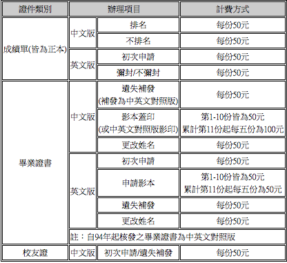

管理者
帳號：
密碼：
登入
回到首頁
徵才/求才
新增資料
服務功能
常見問題
BLANK PAGE
BLANK PAGE
線上代辦校友證件
我是校友
我要辦理
線上申請
點我申請
查詢申請案件
我要查詢
相關連結
查看更多
留言板
Jacob Cummings
說悄悄話
×
申請代辦校友證明：

我已閱讀
×
查詢申請案件（所有欄位皆須填寫）
中文姓名
出生日期
民國
年/
月/
日
確定
重寫
×
要去哪裡
輔仁大學
輔仁大學教務處